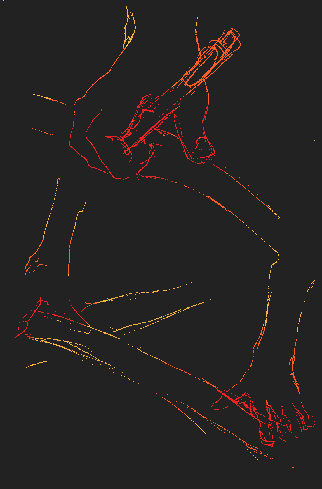
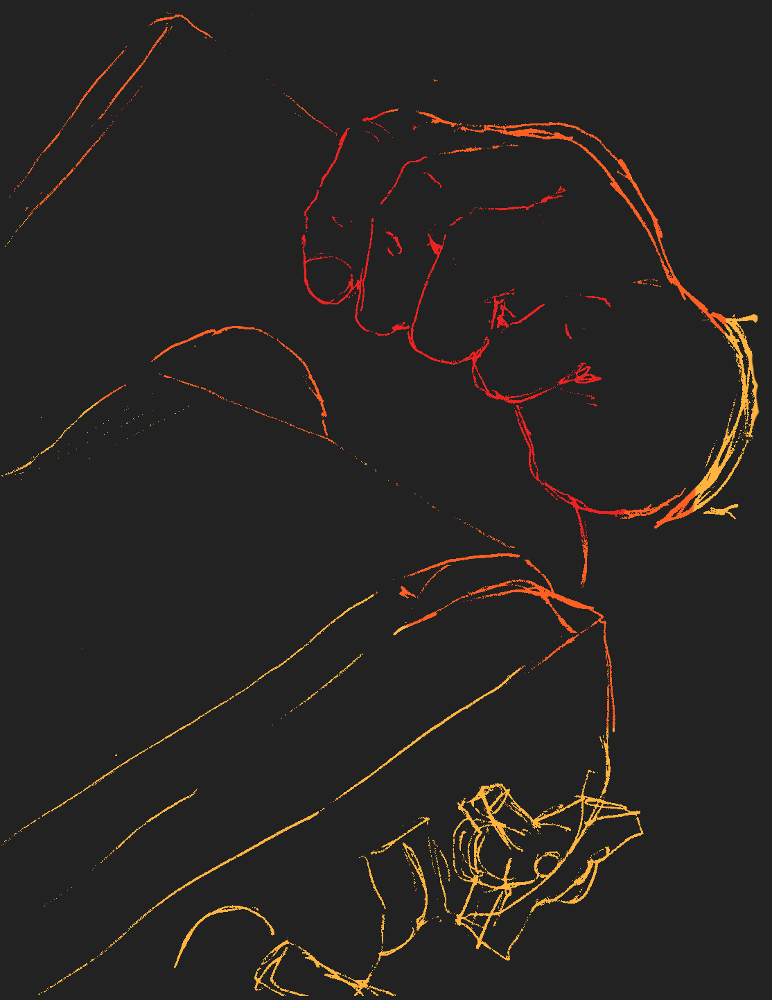
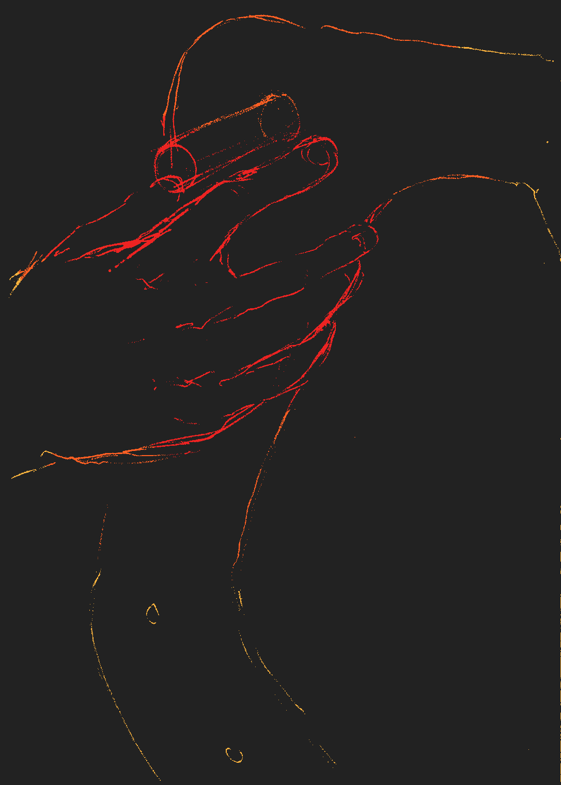
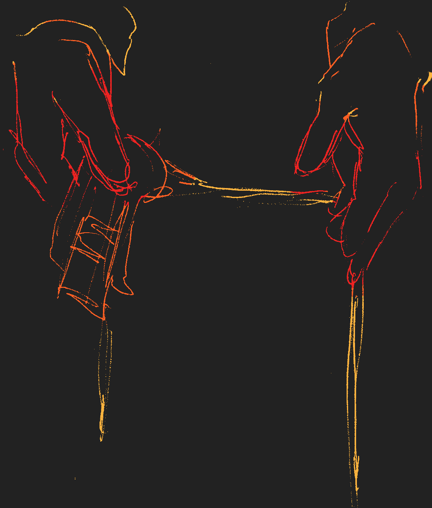
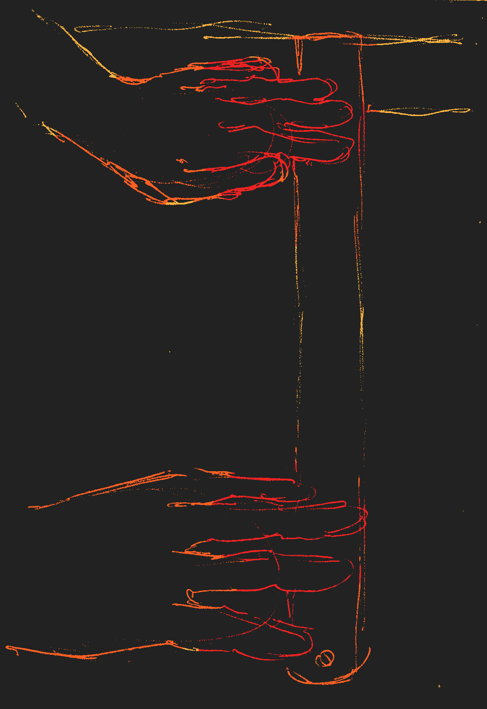
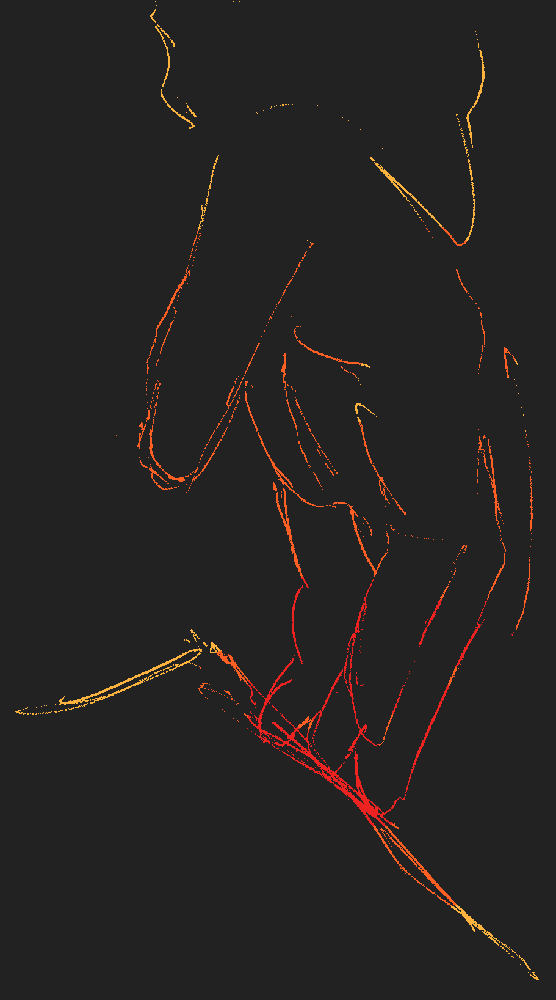

La travesía ocurrió en un periodo de 10 días, desde el 10 de noviembre hasta el 20 de noviembre de 2024. Para llegar al lugar previsto para la estancia, el camping Los Yugos, se pensó en tomar el tren que llevaría al sur, a partir de esta intención se planeó el viaje de ida tanto como el de vuelta. Un viaje de 5 horas en tren de la mano con un viaje de 4 horas en bus, de Viña del Mar a Santiago y de San Carlos al camping.
Una vez en el camping los estudiantes se dividieron por grupos de faena, en: grupo de comida, grupo de aseo y grupo de obra que se dividió en dos secciones en que una trabajaba en el espacio de la obra como tal y otra que trabajaba apartada en otro sector, viendo el respaldo de la banca que era parte de la obra.
La obra se desarrolló en un espacio del camping que ocupaba una antigua construcción la cual era una especie de mirador, el cual daba vista del río que fluía; incluso pudiendo ver a grupos de personas haciendo kayak. Se hizo una construcción en la cual parte de ella permitiera que las personas se pudieran apoyar, y tomarse un momento de pausa para admirar el paisaje que ofrecía el sitio.
La travesía y su clímax en la obra se reflejan en los gestos que acompañan la realización de las tareas. Los gestos son una manifestación del proceso conllevado y son encarnados la mayoría de veces por sus principales expositores, las manos. Las manos se convierten en el puente entre el pensamiento y la toma de acción, transformando las ideas abstractas en realidades palpables. Son las manos las que desvelan, mediante la interacción con el espacio tangible, el proceso de producción que ocurre a lo largo de las travesías. A través del tacto se construye una narrativa.
Esto se percibe con claridad en ciertas las faenas realizadas para la obra, como el entintado de las piezas de madera que conforman el respaldo de una banca, el corte preciso de las tablas que cubren el piso, la cuidadosa nivelación de los pilares y el pulido constante de la madera. Cada pequeño gesto que se puede condensar en algo significativo para el desarrollo de la obra. Estas acciones se desenvuelven a lo largo del viaje hacia el destino, ya sea al momento de comer, croquear o realizar cualquier otra actividad. En cada uno de esos momentos aparecen retazos de lo que implica la dedicación en este viaje mediante las manos, la expansiones del razonar.

La paleta de color se basa en los colores utilizados para la obra, la decisión fue inspirada en un fragmento del poema «Las Ventanas» de Guillaume Apollinaire; a partir de los colores base se pensó en la propuesta de coloreado para los croquis, la transición se visualizaría mejor en un fondo oscuro, que no llegara a ser completamente negro, debido a esta decisión se pensó en que la letra en este caso fuera blanca. Los colores cálidos se utilizará para todo el contenido visual; imágenes y texto.

Se eligió Lora para los párrafos debido a que es una fuente con serif ideal para este fin, ya que la edición tiene páginas donde el único elemento presente es el texto, se minimizaría la carga de lectura para el formato digital que se ocupa.
Primarios: Lora Regular, Lora Italic
Secundarios: Lora Medium, Lora Medium Italic
Roboto era una buena combinación debido al contraste que generaba con el palo seco, debido a la ligereza en los trazos que simulan un buen peso debido a la fácil lectura de esta tipografía, haciendo que se queden más presentes en la mente del lector los encabezados que componen la edición.
Primarios: Roboto Medium
Secundarios: Roboto Regular
Se arma el relato a través de la secuencia de croquis, el texto da el contexto de los acontecimientos ocurridos en la travesía, hay intervalos entre la cotidianidad y las faenas de trabajo, el gesto marca los tiempos del hábito y como se expresan las manos a través de las observaciones hechas.
La lectura se dividirá por momentos, donde habrá momentos que contrarrestan la carga visual de colores, momentos de descanso para el lector donde el texto será lo único visible en la pantalla. Habiendo en ciertas páginas los elementos presentes de las observaciones y dibujos, y otras donde habrá texto que contextualiza sobre los acontecimientos de la travesía de San Fabián de Alico.
Introducción: Se toca brevemente el tema del cual tratará la edición; como a través de los gestos y sus expositoras, las manos se puede desvelar el habitar en la travesía. Se presenta parte del fundamento para anticipar al lector del contenido al cual será expuesto.
Yendo en la pausa: Como parte la travesía hacia San Fabián de Alico, como es el viaje de partida y cómo los estudiantes interactúan con el espacio principal donde se desarrolla, el tren de Estación Central, debido al extenso tramo hasta la Estación San Carlos se producen diferentes extensiones del cuerpo, por lo tanto gestos, que se pueden generar durante el tiempo en tren.
La llegada de una nueva cotidianidad: Llegada al camping Los Yugos, se empieza a generar una rutina durante la estancia que produce tanto los momentos de descanso y convivencia como de faenas de trabajo. La forma de interactuar con el espacio, la forma de habitarlo es sumamente diferente entre sí, se observa en como las manos deben expresarse mediante la necesidad, la necesidad de máxima delicadeza en caso de las faenas de trabajo debido al cuidado de la pulcritud.
El equilibrio en la madera: En este punto se comienza a trabajar con la madera y como el tratado con la misma genera una forma de manipularla que hace que aparezcan gestos antes no vistos durante la travesía. Al utilizar herramientas como la troqueladora o la pulidora, las manos deben contraerse de una forma inusual para poder manipular este tipo de objetos, con tal de lograr el mayor cuidado posible.
El color en la obra: Aparece el color en la obra, las faenas de pintado produce un detenimiento que pide una delicadeza que no permite el tiempo que se necesita para finalizarla. Esto produce que haya que ingeniarse nuevas formas de manipular la madera que acelere el proceso, nuevas actividades que permitan un mayor avance, tales como el encintado de las piezas.
Conclusión: Al terminarse la obra cesan las faenas, aparece la cotidianidad esperan emprender el viaje de vuelta. Ya que toda la atención ya no se fija en la obra sino en la propia persona del viaje, por lo cual la travesía finaliza.
Glosario o vocabulario: Se explican ciertos conceptos de la travesía que quizás no se puedan comprender del todo sin una contextualización.
Colofón: Indica el nombre del autor, fecha de publicación, institución y tipografía utilizada.
Nicho: El público objetivo es gente que no a ido a una travesía, y esta se le presenta desde el punto de vista de las acciones con las manos como esta se desenvuelve. Abarcando este punto de narrativa le puede dar a entender en las distintas formas en las cuales puede converger este tipo de viaje característico de la facultad.
Canales de distribución: Adobe Digital Editions.
Lenguaje: Tercera persona.
Idioma: Español (Chile).